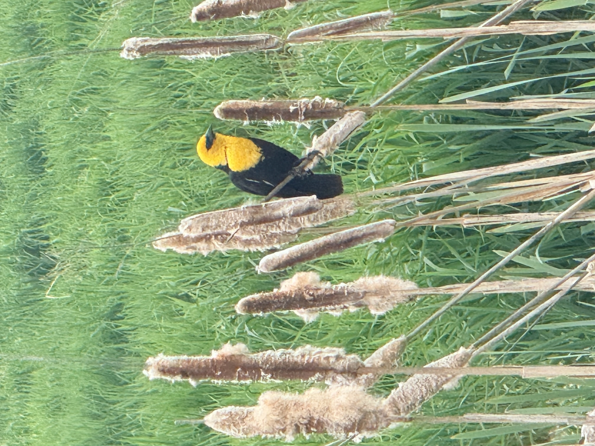

Not ideology or grievance. A commitment to accountable, functional government.
Rachelle Miller grew up in Spokane, earned her undergraduate degree from the University of Montana and her Master of Social Work from Eastern Washington University. She is raising her family here and this community is home. What happens to Spokane County matters to her in a way that goes beyond politics.
Over more than two decades as a Licensed Independent Clinical Social Worker she has worked across mental health, education, and child welfare, at the intersections where systems either hold people up or let them fall through.
She has led region-wide teams through quality assurance and accreditation, helped clinicians develop their practice through the Internal Family Systems Institute, and earned multiple awards for leadership and innovation from the Washington State Department of Social and Health Services. Her work has consistently been about the same thing: helping institutions align with the people they exist to serve.
She has spent her career navigating bureaucracies on behalf of people who had no one else in their corner. She knows how institutions work, how they resist accountability, and how to make them answer for it anyway. That is exactly the skill set this race requires.
She is running because Spokane County's water, land, and power belong to the people who live here, and to the generations that come after us.
